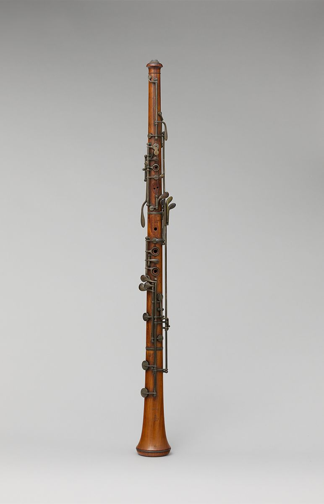
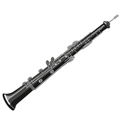

OBOE
Oboe, French hautbois, German Oboe, is a double reed woodwind instrument with a plastic body (for beginners) or a grenadilla wood body (for intermediate/advanced players). The fingering of an oboe is very similar to that of a flute, recorder, or saxophone. The range of the modern oboe extends two and one half octaves upward from the B flat below middle C. The oboe player is commonly used to tune the band.
Oboe was originally one of the names of the shawm, the violently powerful instrument of outdoor ceremonial. The oboe proper (i.e., the orchestral instrument), however, was the mid-17th-century invention of two French court musicians, Jacques Hotteterre and Michel Philidor. It was intended to be played indoors with stringed instruments and was softer and less brilliant in tone than the modern oboe. By the end of the 17th century it was the principal wind instrument of the orchestra and military band and, after the violin, the leading solo instrument of the time.
The oboe and its larger relative, the cor anglais both produce a beautiful, sweet, haunting sound. When used as solo instruments the sound is sometimes described as a ‘pastoral’ sound. This is because they are descended from the type of reed instruments that have been used in folk music and by shepherds the world over for thousands of years. Modern oboes blend superbly with all instruments of the orchestra and can also be surprisingly agile. The oboe is slightly lower in pitch than the flute and so occupies the alto register in the woodwind section.